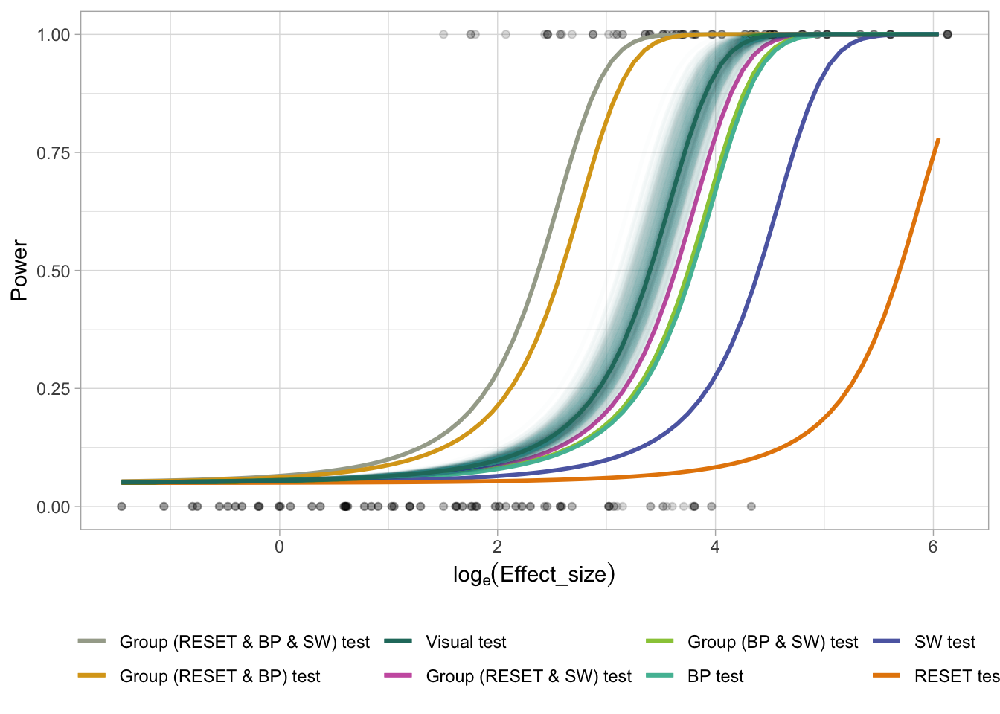

3 Group test (RESET, BP and SW)
Let’s consider a group test consisting of the RESET test, BP test and the SW test.
alpha_star2 <- map_dbl(seq(0.0001, 0.05, 0.0005), function(alpha_star) {
conv_null_dat %>%
filter(RESET_p_value <= alpha_star | SW_p_value <= alpha_star) %>%
nrow()/nrow(conv_null_dat)
}) %>%
{seq(0.0001, 0.05, 0.0005)[which.min(abs(. - 0.05))]}
alpha_star2
#> [1] 0.0246
alpha_star3 <- map_dbl(seq(0.0001, 0.05, 0.0005), function(alpha_star) {
conv_null_dat %>%
filter(BP_p_value <= alpha_star | SW_p_value <= alpha_star) %>%
nrow()/nrow(conv_null_dat)
}) %>%
{seq(0.0001, 0.05, 0.0005)[which.min(abs(. - 0.05))]}
alpha_star3
#> [1] 0.0266
alpha_star4 <- map_dbl(seq(0.0001, 0.05, 0.0005), function(alpha_star) {
conv_null_dat %>%
filter(RESET_p_value <= alpha_star | BP_p_value <= alpha_star | SW_p_value <= alpha_star) %>%
nrow()/nrow(conv_null_dat)
}) %>%
{seq(0.0001, 0.05, 0.0005)[which.min(abs(. - 0.05))]}
alpha_star4
#> [1] 0.01763.1 Fit GLM
conv_test_group_dat <- conv_test_dat %>%
mutate(`Group (RESET & BP)_p_value` = ifelse(RESET4_p_value <= alpha_star | BP_p_value <= alpha_star, 0, 1)) %>%
relocate(`Group (RESET & BP)_p_value`, .after = SW_p_value) %>%
mutate(`Group (RESET & SW)_p_value` = ifelse(RESET4_p_value <= alpha_star2 | SW_p_value <= alpha_star2, 0, 1)) %>%
relocate(`Group (RESET & SW)_p_value`, .after = `Group (RESET & BP)_p_value`) %>%
mutate(`Group (BP & SW)_p_value` = ifelse(BP_p_value <= alpha_star3 | SW_p_value <= alpha_star3, 0, 1)) %>%
relocate(`Group (BP & SW)_p_value`, .after = `Group (RESET & SW)_p_value`) %>%
mutate(`Group (RESET & BP & SW)_p_value` = ifelse(RESET4_p_value <= alpha_star3 | BP_p_value <= alpha_star3 | SW_p_value <= alpha_star3, 0, 1)) %>%
relocate(`Group (RESET & BP & SW)_p_value`, .after = `Group (BP & SW)_p_value`)
conv_pred_group <- conv_test_group_dat %>%
select(-RESET3_p_value, -(RESET5_p_value:RESET10_p_value), -F_p_value) %>%
rename(RESET_p_value = RESET4_p_value) %>%
pivot_longer(RESET_p_value:`Group (RESET & BP & SW)_p_value`) %>%
mutate(name = gsub("_p_value", " test", name)) %>%
mutate(reject = value <= 0.05) %>%
select(effect_size, name, reject) %>%
mutate(offset0 = log(0.05/0.95)) %>%
nest(dat = c(effect_size, offset0, reject)) %>%
mutate(mod = map(dat,
~glm(reject ~ effect_size - 1,
family = binomial(),
data = .x,
offset = offset0))) %>%
mutate(power = map(mod, function(mod) {
data.frame(effect_size = exp(seq(log(min_es),
log(max_es),
0.1)),
offset0 = log(0.05/0.95)) %>%
mutate(power = predict(mod, type = "response", newdata = .))
})) %>%
select(-dat, -mod) %>%
unnest(power) %>%
select(-offset0) %>%
mutate(log_effect_size = log(effect_size))3.2 Draw plot
ggplot() +
geom_point(data = visual_test_dat,
aes(log(effect_size), as.numeric(p_value <= 0.05)),
alpha = 0.15) +
geom_line(data = conv_pred_group,
aes(log_effect_size, power, col = name),
size = 1) +
geom_line(data = visual_boot_pred,
aes(log_effect_size, power, col = "Visual test", group = boot_id),
size = 1,
alpha = 0.01) +
geom_line(data = visual_pred,
aes(log_effect_size, power, col = "Visual test"),
size = 1) +
theme_light() +
# scale_color_brewer(palette = "Set3") +
scale_color_manual(breaks = levels(conv_pred_group$name),
values = rev(rcartocolor::carto_pal(8, "Vivid"))) +
xlab(expression(log[e] (Effect_size))) +
ylab("Power") +
labs(col = "", size = "# lineups") +
theme(legend.position = "bottom")
The sensitivity of the tests are ordered as follows:
- Group test (RESET & BP & SW)
- Group test (RESET & BP)
- Visual test
- Group test (RESET & SW) test
- Group test (BP & SW) test
- BP test
- SW test
- RESET test